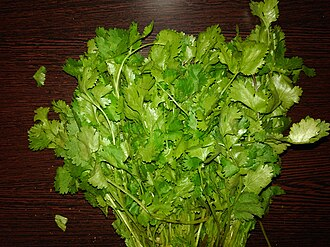

パクチーの生産量 都道府県ランキング
全17県の順位と、とれた量
パクチーが日本でいちばん多くとれるのは茨城県です。315 tで、全国（694 t）の45%を占めます。

| 順位 | 都道府県 | 収穫量 | 全国に占める割合 |
|---|---|---|---|
| 1位 | 茨城県 | 315 t | 45% |
| 2位 | 福岡県 | 76 t | 11% |
| 3位 | 千葉県 | 54 t | 7.8% |
| 4位 | 静岡県 | 53 t | 7.6% |
| 5位 | 佐賀県 | 28 t | 4.0% |
| 6位 | 埼玉県 | 24 t | 3.5% |
| 7位 | 岡山県 | 10 t | 1.4% |
| 8位 | 長野県 | 9 t | 1.3% |
| 9位 | 北海道 | 8 t | 1.2% |
| 10位 | 大分県 | 5 t | 0.7% |
| 11位 | 栃木県 | 4 t | 0.6% |
| 12位 | 新潟県 | 2 t | 0.3% |
| 13位 | 愛媛県 | 2 t | 0.3% |
| 14位 | 神奈川県 | 1 t | 0.1% |
| 15位 | 愛知県 | 1 t | 0.1% |
| 16位 | 京都府 | 1 t | 0.1% |
| 17位 | 大阪府 | 1 t | 0.1% |
この数字について
- 分類：セリ科
- 全国の収穫量：694 t
- この数字が表すもの：収穫量（畑や田でとれた重さ）
- 調査：地域特産野菜生産状況調査 令和6年産
- 17県分を調査（調査していない県は順位に入りません）
パクチーの生産量について、よくある質問
- パクチーの生産量が日本一の都道府県はどこですか？
- 茨城県です。地域特産野菜生産状況調査（令和6年産）で315 tでした。
- パクチーの生産量ランキング2位・3位はどこですか？
- 2位は福岡県（76 t）、3位は千葉県（54 t）です。
- パクチーの生産量ランキング4位・5位はどこですか？
- 4位は静岡県（53 t）、5位は佐賀県（28 t）です。パクチーの全17県の順位は上の表のとおりです。
- パクチーの全国の生産量はどれくらいですか？
- 694 t（令和6年産）です。